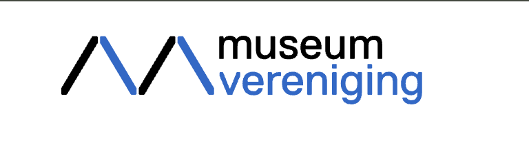

Geen bevindingen.
Samenvatting
Wij hebben de bevindingen van de eerste audit van de Museumkaart app (Android versie) gecontroleerd in april 2026. Op dit moment zijn 46 van de 50 succescriteria als voldoende beoordeeld. In dit rapport lees je wat er bij de overige 4 nog fout gaat, en hoe je dat kunt verbeteren.
In opdracht van

-
Voldoet
-
Afgekeurd
50
Totaal
- voldoet
Impact
Klein: 0
Medium: 0
Groot: 0
Type
Content: 0
Techniek: 0
Waarneembaar
- van 20
Bedienbaar
- van 17
Begrijpelijk
- van 10
Robuust
- van 3
Deze SC zijn afgekeurd:
Over dit onderzoek
- Onderzocht door
- Proper Access
- Opdrachtgever
- Museumvereniging
- Datum rapport
- april 2026
- Standaard
- WCAG 2.1
- Methodologie
- WCAG-EM
Scope van het onderzoek
- Alle schermen van de app
- Buiten scope: alle webpagina's die in de app worden geopend. Deze pagina's zijn onderzocht in de volledige audit van de website museum.nl.
Basisniveau toegankelijkheidsondersteuning
- Samsung S21 FE 5G (Android 16, One UI 8.0)
- App versie 1.2.1(45)
Technologieën van de website
- TalkBack schermlezer
- extern toetsenbord
Voortgang opgeloste bevindingen
Samenwerken met je team
Exporteer alle bevindingen als CSV-bestand. Je kunt het in een (online) spreadsheet inladen om met je team samen te werken.
Importeer in Jira
Exporteer alle bevindingen als Jira-compatibel CSV-bestand. Je kunt het direct importeren via Jira > Issues > Import issues from CSV.
Zelf bijhouden in de browser
Houd per bevinding bij of het is opgelost. Je voortgang wordt opgeslagen in jouw browser. Niemand anders kan je resultaat zien.
Plan van aanpak
Het plan van aanpak is voor dit rapport niet beschikbaar.
0 van
0 opgelost
Gevonden problemen
Filter bevindingen op:
Impact:
Type:
Status:
Geen bevindingen gevonden voor dit filter.
Geen bevindingen.
Geen bevindingen.
#1 - Label is niet gekoppeld aan het invoerveld
Op dit scherm staan 2 opties: Museumkaart en tijdelijke kaart. De keuzerondjes in deze opties hebben geen toegankelijke naam. Er wordt momenteel niet voorgelezen welke optie wordt geselecteerd.
Hoe te reproduceren: raak met 1 vinger een keuzerondje aan en luister naar TalkBack. De schermlezer moet niet alleen aankondigen dat dit een interactief element is, maar ook welk label het heeft.
Oplossing:
Naast het invoerveld staat een label. Verbind deze tekst met het interactief element.
Geen bevindingen.
Geen bevindingen.
#2 - Beweging kan niet worden gepauzeerd
Op dit scherm verschijnt een animatie die automatisch wordt afgespeeld en niet kan worden gepauzeerd of gestopt.
Het kan storend zijn voor mensen met een cognitieve beperking als een video, GIF of animatie in een app automatisch gaat spelen. De bewegende inhoud zorgt voortdurend voor afleiding terwijl ze de tekst op het scherm proberen te lezen. Er moet een manier zijn voor bezoekers om dit soort multimedia te stoppen, pauzeren of verbergen. Dit geldt voor alle bewegende, knipperende, scrollende of automatisch actualiserende content die tegelijk met andere informatie wordt getoond, automatisch start en langer dan 5 seconden speelt.
#3 - Foutmeldingen verdwijnen te snel
Wanneer een verkeerde code wordt ingevoerd, verschijnt een foutmelding "Er is fout opgetreden. Sluiten". Na een paar seconden verdwijnt het bericht.
Hierdoor hebben sommige bezoekers niet voldoende tijd om de fout te lezen en te begrijpen. Foutmeldingen moeten zichtbaar blijven totdat de bezoeker zelf iets doet om ze te verwijderen.
Oplossing:
Zorg dat de foutmeldingen zichtbaar blijven. Voeg eventueel een sluitknop toe waarmee bezoekers de foutmelding zelf kunnen afsluiten.
#4 - Onvoldoende kleurcontrast

Wanneer de kaart niet actief is op dit toestel, wordt het als een grijze kaart getoond met lichtgrijze tekst op een grijze achtergrond.
De contrastverhouding is te laag: 1,8:1 tot 2,5:1. Deze tekst is kleiner dan 24px en niet vetgedrukt, daarom moet het contrast minimaal 4,5:1 zijn.
Oplossing:
Verhoog het contrast tot 4,5:1.
#5 - Leesvolgorde komt niet overeen met de visuele volgorde van elementen
Bovenaan dit scherm staan twee iconen van plus en een avatar. Deze iconen worden als laatste voorgelezen. Dit is verwarrend voor slechtziende bezoekers die een schermlezer gebruiken.
Hoe te reproduceren: open dit scherm, zet TalkBack aan en swipe met 1 vinger van links naar rechts.
Geen bevindingen.
#6 - Er worden teksten voorgelezen die niet op dit scherm staan
Er is een verschil tussen wat je op het scherm ziet en wat TalkBack voorleest. Dit verschil kan tot verwarring leiden bij slechtziende bezoekers die een schermlezer gebruiken.
Hoe te reproduceren: open dit scherm, zet TalkBack aan en swipe met 1 vinger van links naar rechts.
Oplossing:
Beperk de schermlezer focus tot teksten die op dit scherm staan.
Geen bevindingen.
#7 - Foutmeldingen verdwijnen te snel
Wanneer een verkeerde code wordt ingevoerd, verschijnt een foutmelding "Er is fout opgetreden. Sluiten". Na een paar seconden verdwijnt het bericht.
Hierdoor hebben sommige bezoekers niet voldoende tijd om de fout te lezen en te begrijpen. Foutmeldingen moeten zichtbaar blijven totdat de bezoeker zelf iets doet om ze te verwijderen.
Oplossing:
Zorg dat de foutmeldingen zichtbaar blijven. Voeg eventueel een sluitknop toe waarmee bezoekers de foutmelding zelf kunnen afsluiten.
Over dit onderzoek
Leeswijzer
Onze rapporten zijn anders. Bij het bespreken van de gevonden problemen volgen wij niet de structuur van de norm, maar die van jouw website of app. Hierdoor kun je gewoon per pagina of scherm aan de slag gaan. Wel zo makkelijk! Je vindt verderop een overzicht van alle pagina’s met problemen.
We geven je bij elk gevonden issue een paar voorbeelden, maar niet een complete lijst. Controleer zelf of het probleem ook nog op andere plekken voorkomt. Zie het rapport als een leidraad.
Gebruikte norm
Dit onderzoek laat zien in hoeverre de website op dit moment voldoet aan WCAG 2.2, niveau A en AA. WCAG staat voor Web Content Accessibility Guidelines. Dit is de internationale norm voor digitale toegankelijkheid. De Europese norm EN 301 549 bevat alle eisen van WCAG op niveau A en AA.
In dit rapport hebben we korte beschrijvingen van de succescriteria uit de norm opgenomen, met een algemene uitleg erbij. Wil je ze helemaal lezen? Bekijk dan de documentatie van WCAG.
Gebruikte onderzoeksmethode
We gebruiken de onderzoeksmethode WCAG-EM van het W3C. Het proces ziet er als volgt uit:
- vaststellen wat binnen en buiten scope valt
- vaststellen welke technologieën zijn gebruikt
- steekproef (sample) samenstellen
- steekproef onderzoeken
- gevonden issues beschrijven
Het grootste deel van het onderzoek doen we met de hand. Voor een deel van de toegankelijkheidseisen gebruiken we automatische tools als ondersteuning, zoals axe-core en Chrome Developer Tools.
Belangrijk om te weten
Dit rapport helpt je om de toegankelijkheid van je website te verbeteren. Maar let op: het is geen definitieve, volledige lijst van alle aanwezige toegankelijkheidsproblemen. Dat zit zo:
Het is een steekproef
Ten eerste is het onderzoek gebaseerd op een steekproef. Die is op een betrouwbare manier genomen, en de meeste problemen zullen daardoor zeker aan het licht komen. Toch kan een probleem net buiten de steekproef vallen. Bij een volgend onderzoek kan het wel ontdekt worden.
Op basis van falsificatie
We beoordelen vanuit het principe van falsificatie. Dat houdt in dat we proberen te bewijzen dat iets niet waar is, in plaats van te bevestigen dat het klopt. ‘Voldoet’ betekent daarom dat we geen reden hebben gevonden om een punt af te keuren. Maar als we later wél een reden vinden, kan het alsnog worden afgekeurd.
Voortschrijdend inzicht
Het komt voor dat de beoordeling van een succescriterium op detailniveau verandert. De norm beschrijft namelijk niet élk mogelijk scenario. Samen met andere onderzoeksbureaus overleggen we hoe we met bepaalde situaties omgaan. Zo kan iets dat nu wordt afgekeurd, soms bij een volgend onderzoek worden goedgekeurd en andersom.
Oplossen leidt tot nieuw probleem
Ten slotte kan het gebeuren dat bij het oplossen van een probleem onbedoeld een nieuw toegankelijkheidsprobleem ontstaat. Dat komt dan bij een volgend onderzoek pas naar voren.
Hoe werkt dit rapport?
Bevindingen bekijken en filteren
Alle gevonden toegankelijkheidsproblemen staan onder Gevonden problemen. Je kunt de bevindingen filteren op:
- Impact (Groot, Medium, Klein, Advies) — hoe ernstig is het probleem voor de gebruiker?
- Type (Content, Techniek) — moet de inhoud of de techniek worden aangepast?
- Status (Open, Opgelost) — welke problemen zijn al verholpen?
Voortgang bijhouden
Je kunt je voortgang op twee manieren bijhouden:
- CSV-export — exporteer alle bevindingen als CSV-bestand en laad het in een (online) spreadsheet om met je team samen te werken.
- Jira-export — exporteer alle bevindingen als Jira-compatibel CSV-bestand. Importeer het via Jira > Issues > Import issues from CSV. Bevindingen worden aangemaakt als bugs met prioriteit op basis van impact.
- Registreer in de browser — activeer deze optie om per bevinding bij te houden of het is opgelost. Je voortgang wordt opgeslagen in je browser. Niemand anders kan je resultaat zien. Let op: de voortgang is gekoppeld aan je browser. Als je een andere browser of een ander apparaat gebruikt, begint de telling opnieuw.
- Plan van aanpak — download een geprioriteerd plan van aanpak om de gevonden problemen stap voor stap op te lossen. Dit is beschikbaar bij audits vanaf maart 2026.
Link naar een specifieke bevinding delen
Bij elke bevinding verschijnt een link-icoon wanneer je er met de muis overheen gaat. Klik op dit icoon om de directe link naar die bevinding te kopiëren. Je kunt deze link plakken in een e-mail of chatbericht, bijvoorbeeld om een vraag te stellen aan Proper Access over een specifiek punt.